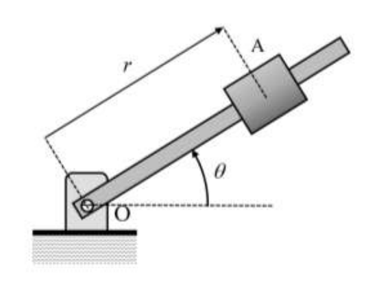
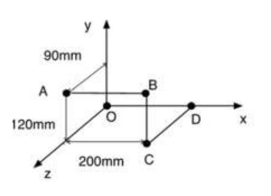
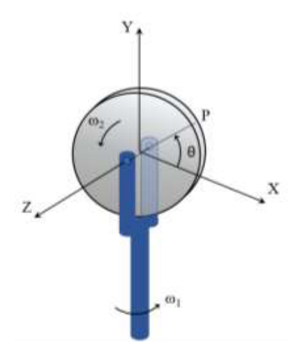
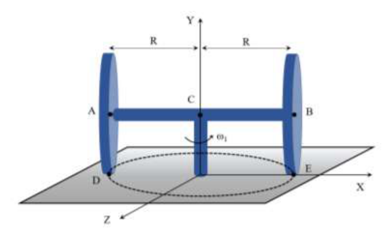
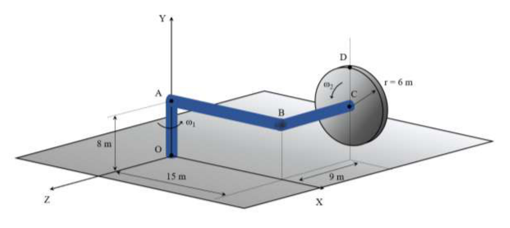
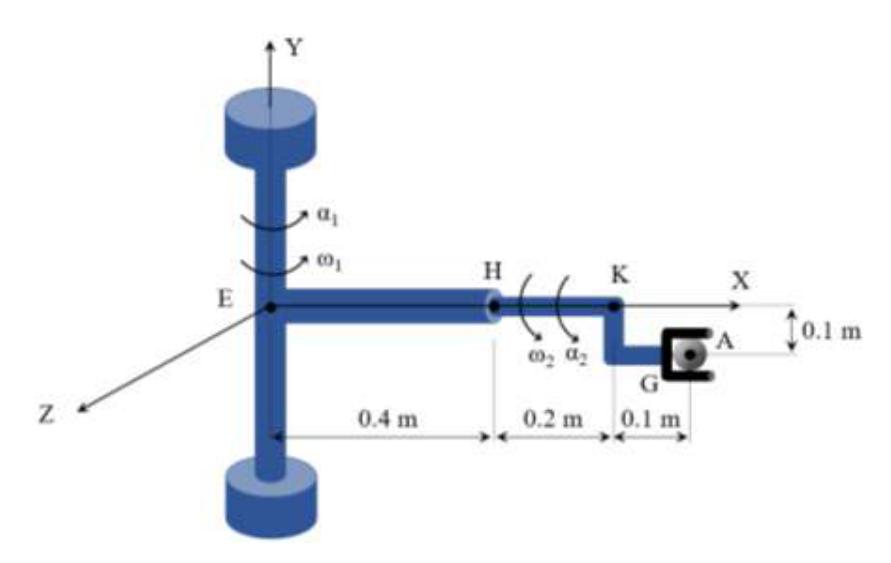
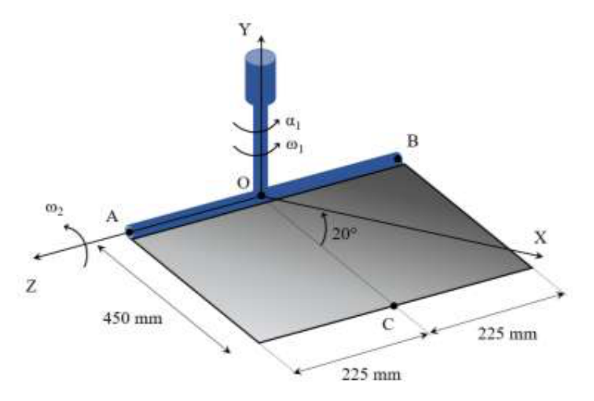
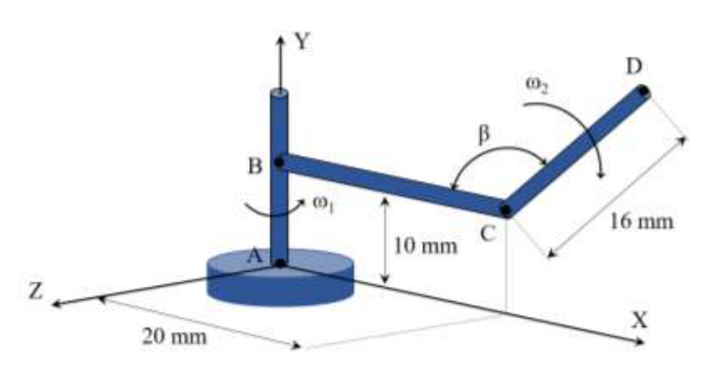

Cuerpo en trayectoria vectorial: velocidad, aceleración y radio de curvatura
Un cuerpo se mueve sobre una trayectoria descrita por el vector de posición \(\vec{r} = t^2\,\vec{i} + t\,\vec{j} + \vec{k}\) (en metros, \(t\) en segundos). Calcular:
a) Velocidad y aceleración con sus dos componentes intrínsecas.
b) Radio de curvatura a los \(t = 2\ \text{s}\) de iniciado el movimiento.
| Vector de posición | \(\vec{r}(t) = t^2\,\vec{i} + t\,\vec{j} + \vec{k}\ \text{m}\quad (t\ \text{en s})\) |
| Instante de cálculo | \(t = 2\ \text{s}\) |
¿Por qué? La velocidad y la aceleración son, por definición, la primera y segunda derivada del vector de posición respecto al tiempo. Derivar \(\vec{r}(t)\) es la forma más directa de obtenerlas cuando la posición se conoce como función explícita de \(t\).
Derivando \(\vec{r}\) respecto al tiempo:
En \(t = 2\ \text{s}\): \(\vec{v} = 4\,\vec{i} + \vec{j}\ \text{m/s}\) con módulo \(|\vec{v}| = \sqrt{16+1} = \sqrt{17} \approx 4{,}123\ \text{m/s}\).
¿Por qué? Las componentes intrínsecas descomponen \(\vec{a}\) según la trayectoria: la tangencial \(a_t\) mide el cambio de rapidez (variación del módulo de \(\vec{v}\)) y la normal \(a_n\) mide el cambio de dirección. Se calculan proyectando \(\vec{a}\) sobre el vector unitario tangente \(\hat{v}=\vec{v}/|\vec{v}|\) para \(a_t\), y por diferencia de módulos para \(a_n\).
La aceleración tangencial es la proyección de \(\vec{a}\) sobre \(\vec{v}\):
La aceleración normal:
¿Por qué? El radio de curvatura cuantifica cómo de "cerrada" es la trayectoria en cada punto. La fórmula \(\rho = |\vec{v}|^3 / |\vec{v}\times\vec{a}|\) se deduce de la relación \(a_n = v^2/\rho\) y del hecho de que \(|\vec{v}\times\vec{a}| = v\,a_n\). Es válida en 3D y evita parametrizar explícitamente la curva.
Usando el producto vectorial \(\vec{v}\times\vec{a}\):
Partícula en trayectoria paramétrica: radio de curvatura a \(t = 2\ \text{s}\)
Una partícula sigue la trayectoria: \(x = 3t - 1\), \(y = 5t^2 - 8t - 4\), \(z = 15t - 6t^2 + 1\) (metros, \(t\) en segundos). Calcular el radio de curvatura a los \(t = 2\ \text{s}\) de iniciado el movimiento.
| Trayectoria | \(x=3t-1\), \(y=5t^2-8t-4\), \(z=15t-6t^2+1\) (m, t en s) |
| Instante | \(t = 2\ \text{s}\) |
¿Por qué? Derivamos cada componente de posición respecto a \(t\) para obtener la velocidad vectorial. Luego sustituimos \(t=2\ \text{s}\) para obtener el valor numérico. Este paso es necesario porque \(\rho\) depende de \(|\vec{v}|\) y de \(|\vec{v}\times\vec{a}|\), que requieren \(\vec{v}\) y \(\vec{a}\) evaluados en el instante pedido.
¿Por qué? La aceleración es la segunda derivada de la posición (o la primera de la velocidad). En este caso las componentes son polinomios simples, así que la derivación es inmediata. El resultado constante en \(y\) y \(z\) indica que la variación de velocidad es uniforme en esas direcciones.
¿Por qué? El radio de curvatura cuantifica cómo de "cerrada" es la trayectoria en cada punto. La fórmula \(\rho = |\vec{v}|^3 / |\vec{v}\times\vec{a}|\) se deduce de la relación \(a_n = v^2/\rho\) y del hecho de que \(|\vec{v}\times\vec{a}| = v\,a_n\). Es válida en 3D y evita parametrizar explícitamente la curva.
Se calcula mediante \(\rho = |\vec{v}|^3\,/\,|\vec{v}\times\vec{a}|\):
Varilla giratoria con deslizadera: velocidad y aceleración a \(t = 1\ \text{s}\)
Una varilla gira según \(\theta = 2\pi t^2\) (radianes, \(t\) en segundos). Una deslizadera se mueve sobre la varilla según \(r = 60t^2 - 20t^3\) (metros). Cuando \(t = 1\ \text{s}\), calcular:
a) Velocidad de la deslizadera.
b) Aceleración de la deslizadera.
c) Aceleración de la deslizadera respecto a la varilla.

| Ley de giro de la varilla | \(\theta = 2t^2\ \text{rad}\Rightarrow\dot\theta = 4t\ \text{rad/s},\ \ddot\theta = 4\ \text{rad/s}^2\) |
| Posición de la deslizadera | \(r = 60t^2-20t^3\ \text{m}\Rightarrow\dot{r}=120t-60t^2\ \text{m/s},\ \ddot{r}=120-120t\ \text{m/s}^2\) |
| Instante | \(t = 1\ \text{s}\) |
¿Por qué? Antes de aplicar las fórmulas de coordenadas polares hay que evaluar \(r\), \(\dot{r}\), \(\ddot{r}\), \(\dot{\theta}\) y \(\ddot{\theta}\) en el instante pedido. Estos valores numéricos son los que entrarán en todas las expresiones de velocidad y aceleración.
¿Por qué? Las coordenadas polares son el sistema natural para describir movimiento sobre una varilla giratoria: \(v_r=\dot{r}\) es la velocidad de deslizamiento a lo largo de la varilla, y \(v_\theta = r\dot{\theta}\) es la velocidad de arrastre perpendicular causada por la rotación de la varilla. Ambas son perpendiculares entre sí.
¿Por qué? La aceleración en polares tiene cuatro términos: \(\ddot{r}\) (variación de la velocidad radial propia), \(-r\dot{\theta}^2\) (centrípeta, por la rotación: incluso sin \(\ddot{r}\) el punto acelera hacia el centro), \(r\ddot{\theta}\) (tangencial, por la variación de \(\omega\)) y \(2\dot{r}\dot{\theta}\) (aceleración de Coriolis, acoplamiento entre deslizamiento y rotación).
¿Por qué? La aceleración relativa es la que mediría un observador solidario a la varilla giratoria. En ese sistema de referencia, el punto solo se mueve radialmente, por lo que \(a_{rel}=\ddot{r}\). Los términos centrípeta y de Coriolis son efectos del sistema de referencia en rotación, no aceleraciones "reales" para ese observador.
En el sistema de referencia solidario a la varilla giratoria, la deslizadera solo tiene movimiento radial. Su aceleración relativa es la aceleración debida al desplazamiento radial puro:
Sistema de barras rígidas \(AB\)–\(BC\)–\(CD\) girando respecto eje \(AD\)
Las barras \(AB\), \(BC\) y \(CD\) unen rígidamente los puntos \(A\) y \(D\). El sistema gira respecto al eje \(AD\) con velocidad angular \(\omega = 75\ \text{rad/s}\) (desde \(D\) hacia \(A\)). Determinar la velocidad y aceleración del punto \(B\). Geometría: \(A\) a \(90\ \text{mm}\) en \(Y\); distancias \(120\ \text{mm}\) en \(Z\) y \(200\ \text{mm}\) en \(X\).

| Sistema | Barras rígidas \(AB\)–\(BC\)–\(CD\); eje de rotación \(AD\) |
| Velocidad angular | \(\omega = 75\ \text{rad/s}\) sentido \(D\to A\) |
| Geometría | \(A=(0,90,120)\ \text{mm};\ B=(0,90,0)\ \text{mm};\ D=(200,0,0)\ \text{mm}\) |
¿Por qué? Para expresar \(\vec{\omega}\) como vector necesitamos su dirección: el eje de rotación. El eje pasa por A y D, así que se toma el vector \(\overrightarrow{DA}\), se calcula su módulo (distancia entre A y D) y se divide para obtener el vector unitario \(\hat{u}_{DA}\).
¿Por qué? El vector velocidad angular es el producto del módulo escalar \(\omega\) por el vector unitario del eje: \(\vec{\omega}=\omega\,\hat{u}\). El sentido viene dado por el enunciado ("desde D hacia A") aplicando la regla de la mano derecha: los dedos apuntan en el sentido de giro y el pulgar en la dirección de \(\vec{\omega}\).
¿Por qué? La velocidad de cualquier punto B de un sólido rígido que gira alrededor de un eje fijo se calcula con \(\vec{v}_B = \vec{\omega}\times\vec{r}_{AB}\), donde \(\vec{r}_{AB}\) va desde cualquier punto del eje (aquí A) hasta B. El resultado es siempre perpendicular tanto al eje como al radio.
\(\vec{r}_{AB} = B - A = (0,0,-120)\ \text{mm} = -0{,}12\,\vec{k}\ \text{m}\)
¿Por qué? Cuando \(\omega\) es constante, \(\vec{\alpha}=d\vec{\omega}/dt=\vec{0}\), y la aceleración se reduce al término centrípeto \(\vec{a}_B=\vec{\omega}\times(\vec{\omega}\times\vec{r}_{AB})\). Este doble producto vectorial siempre apunta hacia el eje de rotación (como la aceleración centrípeta del movimiento circular plano).
Disco en horquilla giratoria: aceleración angular y aceleración del punto \(P\)
Un disco de radio \(r\) gira con velocidad angular \(\omega_2\) constante alrededor de un eje horizontal \(Z\). La horquilla que sostiene el disco rota con velocidad angular constante \(\omega_1\) respecto al eje \(Y\). Calcular:
a) Aceleración angular del disco.
b) Aceleración del punto \(P\) cuando \(\theta = 0°\).
c) Aceleración del punto \(P\) cuando \(\theta = 90°\).

| Disco | Radio \(r\); gira con \(\omega_2\) (constante) respecto al eje horizontal \(Z\) |
| Horquilla | Gira con \(\omega_1\) (constante) respecto al eje vertical \(Y\) |
| Punto P | En la periferia del disco; ángulo \(\theta\) medido desde el eje \(X\) |
¿Por qué? El disco tiene dos rotaciones simultáneas: la propia del disco (\(\omega_2\)) y la de la horquilla (\(\omega_1\)). Al derivar \(\vec{\omega}_{disco}\) en el sistema fijo, el eje de \(\omega_2\) no es fijo sino que rota con \(\omega_1\). Eso añade el término \(\vec{\omega}_1\times\vec{\omega}_2\) a la aceleración angular (regla de Euler para derivar vectores en sistemas giratorios). Omitir este término es el error más frecuente en problemas de doble rotación.
La velocidad angular total del disco es suma de la rotación propia y la del soporte:
La aceleración angular se obtiene derivando \(\vec{\omega}\) en el sistema fijo, aplicando la regla del sistema giratorio (\(\omega_1\) arrastra a \(\omega_2\,\vec{k}\)):
¿Por qué? La posición de P en el disco depende de \(\theta\). Para \(\theta=0°\), P está en la dirección \(+X\): \(\vec{r}_P=r\,\vec{i}\). Con \(\vec{\omega}\) y \(\vec{\alpha}\) ya calculados, la aceleración de cualquier punto del disco sigue la fórmula \(\vec{a}_P=\vec{\alpha}\times\vec{r}_P+\vec{\omega}\times(\vec{\omega}\times\vec{r}_P)\). Los dos términos son el tangencial y el centrípeto respectivamente.
En \(\theta=0°\): P está en la dirección \(+X\), por tanto \(\vec{r}_P = r\,\vec{i}\).
¿Por qué? Con \(\theta=90°\), P está en la dirección \(+Z\): \(\vec{r}_P=r\,\vec{k}\). El procedimiento es idéntico al apartado anterior, pero con un \(\vec{r}_P\) distinto, lo que cambia completamente los productos vectoriales. Calcular los dos apartados por separado es la forma más segura de no cometer errores.
En \(\theta=90°\): P está en la dirección \(+Z\), por tanto \(\vec{r}_P = r\,\vec{k}\).
Dos discos sobre plano horizontal: velocidad angular, aloide fijo y móvil
Dos discos de radio \(R\) (discos \(A\) y \(B\)) montados sobre el eje \(AB\) de longitud \(2R\) ruedan sin deslizar sobre un plano horizontal. El eje gira con velocidad angular \(\omega_1\) constante. Determinar:
a) Velocidad angular del disco \(A\).
b) Aceleración angular del disco \(A\).
c) Aceleración del punto \(D\).
d) Representar el EIRD con aloide fijo y móvil.

| Discos A y B | Radio \(R\); ruedan sin deslizar sobre plano horizontal |
| Eje AB | Longitud \(2R\); gira con \(\omega_1\) constante respecto al eje \(Y\) |
| Punto D | Punto inferior del disco \(A\) (contacto con el plano) |
¿Por qué? El disco tiene dos rotaciones: la del eje AB alrededor de \(Y\) (\(\omega_1\,\vec{j}\)) y la propia del disco sobre el eje \(X\) (\(\omega_x\,\vec{i}\)). La condición de rodadura sin deslizamiento impone que la velocidad del punto de contacto D sea cero. Esa condición determina únicamente \(\omega_x\), fijando la velocidad angular total \(\vec{\omega}_A\).
El disco rueda sin deslizar: el punto de contacto \(D\) tiene velocidad nula. El eje \(AB\) (eje \(X\)) tiene velocidad angular \(\omega_1\,\vec{j}\). El disco gira además respecto al eje \(X\) con \(\omega_x\). La condición de rodadura pura impone:
¿Por qué? Derivando \(\vec{\omega}_A\) en el sistema fijo, el vector unitario \(\vec{i}\) (eje del disco) no es fijo sino que rota con \(\vec{\omega}_1=\omega_1\,\vec{j}\). Por la regla de derivación en sistemas giratorios, \(d(\omega_x\,\vec{i})/dt|_{fijo} = \vec{\omega}_1\times(\omega_x\,\vec{i})\). Es la misma regla que en el ejercicio 7.5.
Derivando \(\vec{\omega}_A\) en el sistema fijo (el eje \(\vec{i}\) gira con \(\omega_1\)):
¿Por qué? D es un punto específico del disco, no el centro. Su aceleración se calcula aplicando la fórmula del sólido rígido desde el centro G del disco: \(\vec{a}_D = \vec{a}_G + \vec{\alpha}\times\vec{r}_{GD} + \vec{\omega}\times(\vec{\omega}\times\vec{r}_{GD})\). Primero hay que calcular \(\vec{a}_G\) (la aceleración del centro, debida a la rotación del brazo).
D está en el centro del disco (\(G\)) desplazado \(-R\,\vec{j}\):
¿Por qué? El EIRD (Eje Instantáneo de Rotación y Deslizamiento) es la línea del espacio con velocidad instantánea nula (o mínima). Al moverse el sólido, este eje va barriendo superficies: el axoide fijo (en el espacio) y el axoide móvil (solidario al sólido). En el caso de un disco que rueda sin deslizar, ambos axoides son superficies cónicas.
El eje instantáneo de rotación y deslizamiento (EIRD) del disco \(A\) es la línea donde la velocidad es nula o tiene solo componente axial. Como el disco rueda sin deslizar sobre el plano, el EIRD pasa por el punto de contacto \(D\) paralelo al eje de giro neto.
- Axoide fijo: cono de vértice en la intersección del eje \(Y\) con el plano, generatriz por \(D\).
- Axoide móvil: cono solidario al disco cuya generatriz es el eje del disco (\(X\)).
Disco en brazo giratorio: aceleración angular y punto \(D\)
Un disco de radio \(6\ \text{m}\) gira con \(\omega_2 = 4\ \text{rad/s}\) alrededor del brazo \(ABC\), el cual gira con \(\omega_1 = 3\ \text{rad/s}\) alrededor del eje \(Y\). Determinar:
a) Aceleración angular del disco.
b) Aceleración del punto \(D\).
Geometría: \(8\ \text{m}\) de \(A\) a \(O\); \(15\ \text{m}\) de \(O\) a \(B\); \(9\ \text{m}\) horizontal; radio del disco \(6\ \text{m}\).

| Disco | Radio \(6\ \text{m}\); gira con \(\omega_2=4\ \text{rad/s}\) (constante) respecto al eje del brazo |
| Brazo ABC | Gira con \(\omega_1=3\ \text{rad/s}\) (constante) respecto al eje \(Y\) |
| Geometría | \(8\ \text{m}\) de \(A\) a \(O\); \(15\ \text{m}\) de \(O\) a \(B\); \(9\ \text{m}\) horizontal; radio \(6\ \text{m}\) |
¿Por qué? El disco tiene dos rotaciones simultáneas: la propia del disco (\(\omega_2\)) y la de la horquilla (\(\omega_1\)). Al derivar \(\vec{\omega}_{disco}\) en el sistema fijo, el eje de \(\omega_2\) no es fijo sino que rota con \(\omega_1\). Eso añade el término \(\vec{\omega}_1\times\vec{\omega}_2\) a la aceleración angular (regla de Euler para derivar vectores en sistemas giratorios). Omitir este término es el error más frecuente en problemas de doble rotación.
La velocidad angular total del disco es:
Derivando en sistema fijo (\(\omega_2\,\vec{i}\) gira con \(\omega_1\)):
¿Por qué? La aceleración de D se descompone en la del centro C del disco (calculada como punto del brazo ABC en rotación con \(\omega_1\)) más la aceleración relativa de D respecto a C debida a la rotación propia del disco. Se aplica \(\vec{a}_D = \vec{a}_C + \vec{\alpha}\times\vec{r}_{CD} + \vec{\omega}\times(\vec{\omega}\times\vec{r}_{CD})\).
D está en la periferia del disco. Posición de D respecto al centro del disco (punto C, extremo del brazo):
Brazo de robot: velocidad y aceleración del extremo \(A\)
Brazo de robot con dos brazos articulados \(EH\) y \(HKG\). El brazo \(EH\) está soldado al eje vertical; el brazo \(HKG\) gira alrededor de \(EH\). Calcular la velocidad y aceleración del extremo \(A\). Datos: \(\omega_1 = 0{,}2\ \text{rad/s}\), \(\alpha_1 = 0{,}1\ \text{rad/s}^2\), \(\omega_2 = 0{,}4\ \text{rad/s}\), \(\alpha_2 = 0{,}3\ \text{rad/s}^2\). Geometría: \(0{,}4\ \text{m}\) (eje vertical), \(0{,}2\ \text{m}\) (horizontal), \(0{,}1\ \text{m}\) (K–A).

| Brazo EH (soldado al eje vertical) | \(\omega_1=0{,}2\ \text{rad/s}\), \(\alpha_1=0{,}1\ \text{rad/s}^2\) (respecto a \(Y\)) |
| Brazo HKG (gira respecto a EH) | \(\omega_2=0{,}4\ \text{rad/s}\), \(\alpha_2=0{,}3\ \text{rad/s}^2\) (respecto a \(Z\)) |
| Geometría | \(0{,}4\ \text{m}\) eje vertical (\(EH\)), \(0{,}2\ \text{m}\) horizontal (\(HK\)), \(0{,}1\ \text{m}\) de \(K\) a \(A\) |
¿Por qué? El robot combina dos rotaciones independientes: \(\omega_1\) del brazo EH alrededor de \(Y\) y \(\omega_2\) del brazo HKG alrededor de \(Z\). La velocidad angular total es su suma vectorial. Para la aceleración angular, el eje de \(\omega_2\) (solidario a HKG) gira con \(\omega_1\), por lo que \(d\vec{\omega}_2/dt|_{fijo}=\alpha_2\,\vec{k}+\vec{\omega}_1\times\omega_2\,\vec{k}\).
¿Por qué? Para aplicar \(\vec{v}_A=\vec{\omega}\times\vec{r}_{EA}\) necesitamos el vector posición de A desde el punto fijo E del eje de rotación global. Se construye sumando los segmentos de la cadena cinemática del robot.
¿Por qué? Aunque el sólido tiene movimiento complejo (dos rotaciones simultáneas), la fórmula \(\vec{v}_A=\vec{\omega}_{total}\times\vec{r}_{EA}\) sigue siendo válida: la velocidad de cualquier punto es el producto vectorial de la velocidad angular total por el vector de posición desde un punto fijo.
¿Por qué? La fórmula de aceleración es \(\vec{a}_A = \vec{\alpha}\times\vec{r}_{EA}+\vec{\omega}\times(\vec{\omega}\times\vec{r}_{EA})\). Como en este ejercicio \(\vec{\alpha}\neq\vec{0}\) (hay aceleraciones angulares \(\alpha_1\) y \(\alpha_2\)), ambos términos contribuyen. El primero es el tangencial y el segundo el centrípeto.
Placa cuadrada articulada en \(A\) y \(B\): aceleración angular y punto \(C\)
Placa cuadrada de \(450\ \text{mm}\) de lado articulada en \(A\) y \(B\). La placa gira con \(\omega_2 = 4\ \text{rad/s}\) respecto al eje \(AB\), y tiene \(\omega_1 = 3\ \text{rad/s}\) y \(\alpha_1 = 2\ \text{rad/s}^2\) respecto al eje \(Y\). Calcular:
a) Aceleración angular de la placa.
b) Velocidad y aceleración del punto \(C\) (a \(225\ \text{mm}\) del centro).

| Placa cuadrada | Lado \(450\ \text{mm}\); articulada en \(A\) y \(B\) |
| Giro de la placa | \(\omega_2=4\ \text{rad/s}\) constante respecto al eje \(AB\) (eje \(X\)) |
| Giro del eje AB | \(\omega_1=3\ \text{rad/s}\), \(\alpha_1=2\ \text{rad/s}^2\) respecto al eje \(Y\) |
| Punto C | Centro de la placa; a \(225\ \text{mm}\) del eje \(AB\) |
¿Por qué? La placa tiene \(\omega_2\) (rotación respecto al eje AB) y \(\omega_1\) con \(\alpha_1\) (rotación del eje AB respecto a \(Y\)). Al derivar \(\omega_2\,\vec{i}\) en el sistema fijo, el eje \(\vec{i}\) rota con \(\vec{\omega}_1\), añadiendo \(\vec{\omega}_1\times\omega_2\,\vec{i}\). Además, \(\alpha_1\,\vec{j}\) contribuye directamente.
¿Por qué? C es el centro de la placa. Con \(\vec{\omega}\) y \(\vec{\alpha}\) calculados en el apartado anterior, la velocidad y aceleración de cualquier punto siguen las fórmulas estándar del sólido rígido con punto fijo: \(\vec{v}_C=\vec{\omega}\times\vec{r}_{AC}\) y \(\vec{a}_C=\vec{\alpha}\times\vec{r}_{AC}+\vec{\omega}\times(\vec{\omega}\times\vec{r}_{AC})\).
C está a \(0{,}225\ \text{m}\) del eje \(AB\), perpendicular a él: \(\vec{r}_{AC} = 0{,}225\,\vec{k}\) (tomando el centro del eje \(AB\) como origen).
Brazo \(CD\) giratorio con ángulo \(\beta = 120°\): aceleración angular y velocidad de \(D\)
Sólido \(AB\) y barra \(BC\) giran con \(\omega_1 = 0{,}6\ \text{rad/s}\) alrededor del eje \(Y\). El brazo \(CD\) gira con \(\omega_2 = 0{,}45\ \text{rad/s}\) con ángulo \(\beta = 120°\) en el plano \(XY\). Calcular:
a) Aceleración angular del brazo \(CD\).
b) Velocidad de \(D\).
c) Aceleración de \(D\).
Geometría: \(20\ \text{mm}\) (diámetro \(A\)), \(10\ \text{mm}\) (\(C\)), \(16\ \text{mm}\) (\(D\)).

| Sólido AB y barra BC | Giran con \(\omega_1=0{,}6\ \text{rad/s}\) constante respecto al eje \(Y\) |
| Brazo CD | Gira con \(\omega_2=0{,}45\ \text{rad/s}\) constante; ángulo \(\beta=120°\) en el plano \(XY\) |
| Geometría | Diámetro de \(A\): \(20\ \text{mm}\); \(C\) a \(10\ \text{mm}\); \(D\) a \(16\ \text{mm}\) |
¿Por qué? El brazo CD gira respecto a un eje (\(\hat{u}_{CD}\)) que a su vez rota con \(\omega_1\,\vec{j}\). Al derivar \(\vec{\omega}_{CD}\) en el sistema fijo, el eje de \(\omega_2\) no es fijo: \(d(\omega_2\,\hat{u}_{CD})/dt|_{fijo}=\vec{\omega}_1\times(\omega_2\,\hat{u}_{CD})\). Como \(\omega_1\) y \(\omega_2\) son constantes, solo queda ese término cruzado.
La velocidad angular de CD combina la rotación del eje \(Y\) y la rotación propia:
Con \(\beta=120°\) en el plano \(XY\): \(\hat{u}_{CD} = \cos120°\,\vec{i}+\sin120°\,\vec{j} = -0{,}5\,\vec{i}+\tfrac{\sqrt{3}}{2}\,\vec{j}\)
¿Por qué? La velocidad angular total del brazo CD es \(\vec{\omega}_{CD}=\vec{\omega}_1+\omega_2\,\hat{u}_{CD}\). Con la posición de D respecto a C, la velocidad se obtiene sumando la velocidad de C (punto del sólido AB que gira con \(\omega_1\)) más \(\vec{\omega}_{CD}\times\vec{r}_{CD}\).
Posición de D relativa a C (\(16\ \text{mm}\) en dirección \(\hat{u}_{CD}\)):
¿Por qué? La aceleración de D se expresa como \(\vec{a}_D=\vec{a}_C+\vec{\alpha}_{CD}\times\vec{r}_{CD}+\vec{\omega}_{CD}\times(\vec{\omega}_{CD}\times\vec{r}_{CD})\), con \(\vec{a}_C\) calculado previamente como punto del sólido AB en rotación con \(\omega_1\) constante.